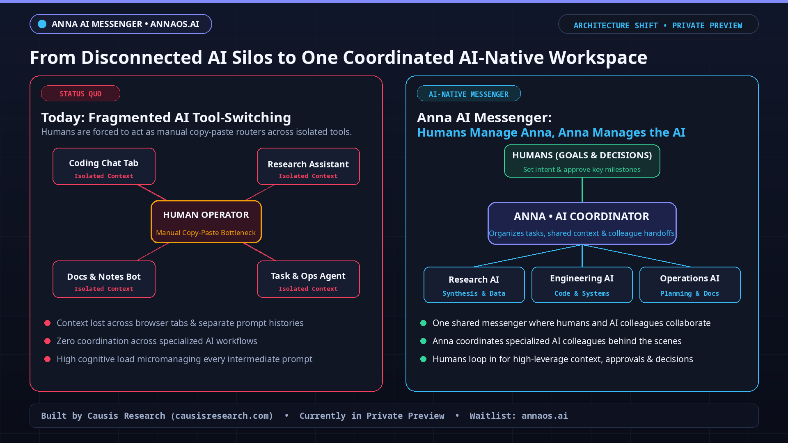
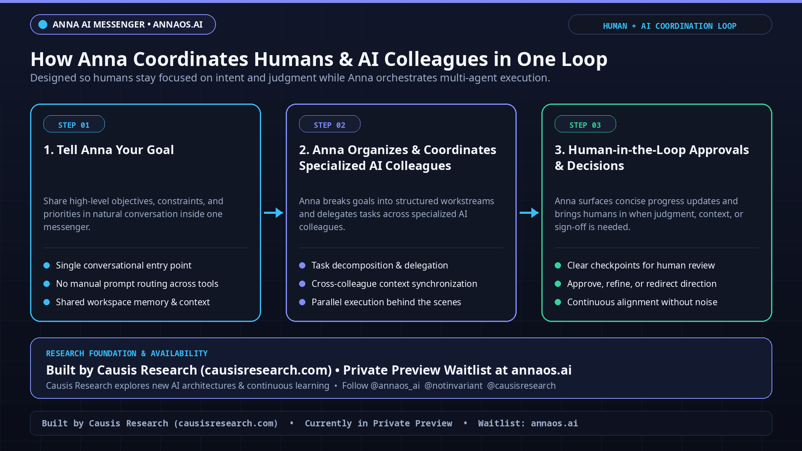

ℹ️ Private Preview Attribution Note:
Anna AI Messenger is built by Causis Research (exploring new architectures & continuous learning) and is currently in private preview. This independent explainer illustrates the publicly shared coordination architecture and links directly to the official waitlist at annaos.ai.
🎬 Full 45-Second 1080p Animated Explainer Video
1920×1080 H.264 MP4 • Full 45.00s runtime • Direct file: anna_ai_messenger_explainer.mp4
📐 High-Resolution 1080p Coordination Diagrams

Diagram 1: Moving from fragmented multi-tab AI copy-paste routing to a unified AI-native messenger where humans manage Anna and Anna coordinates the AI.

Diagram 2: 3-step loop — (1) Share Goal & Constraints ➔ (2) Anna Coordinates Specialized AI Colleagues ➔ (3) Human-in-the-Loop Decisions & Approvals.
Explore Anna AI Messenger & Join the Official Private Preview Waitlist
Built by Causis Research (@annaos_ai · @notinvariant · @causisresearch)